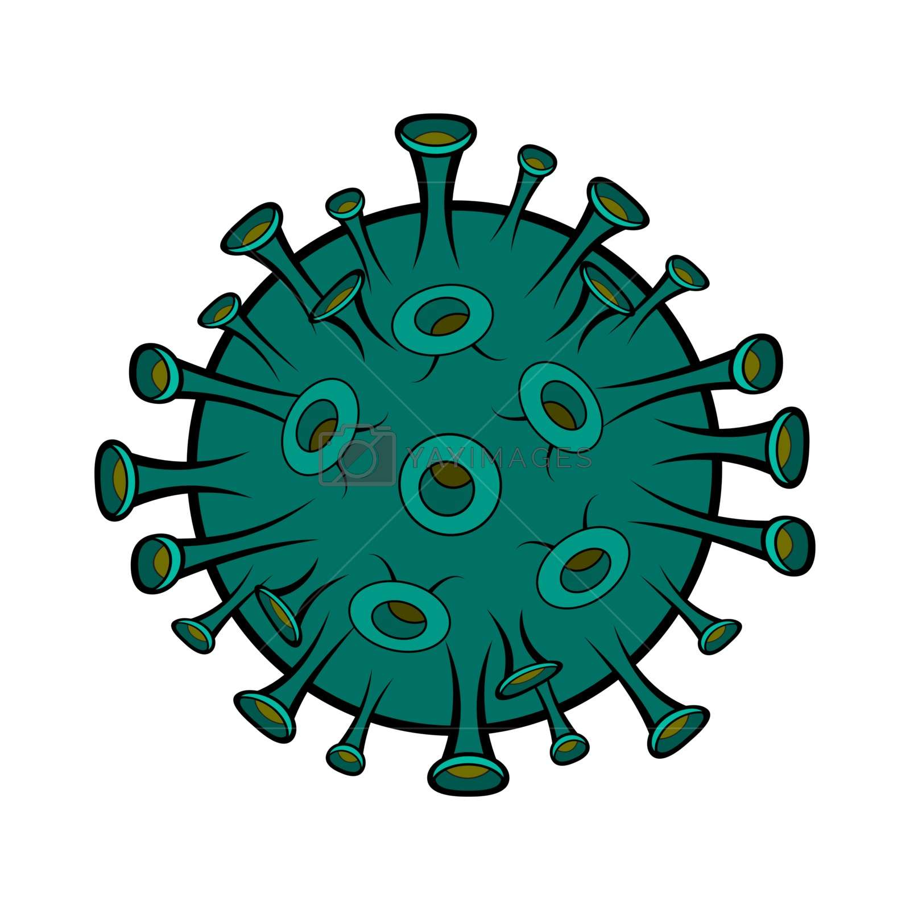

Hi welcome to the Covid-19/Corona-Virus page!
Refresh Page!
Return to home page!
Click the buttons below for info!
Covid-19 General!
Covid-19 How to prevent!
Covid-19 How it spreads!
Asymptomatic!
Presymptomatic!
Statistics!